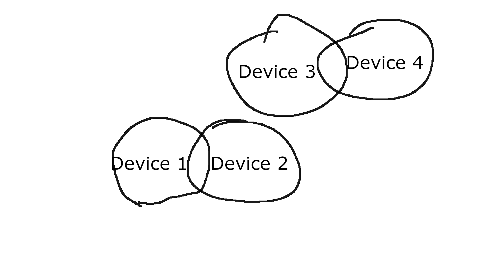
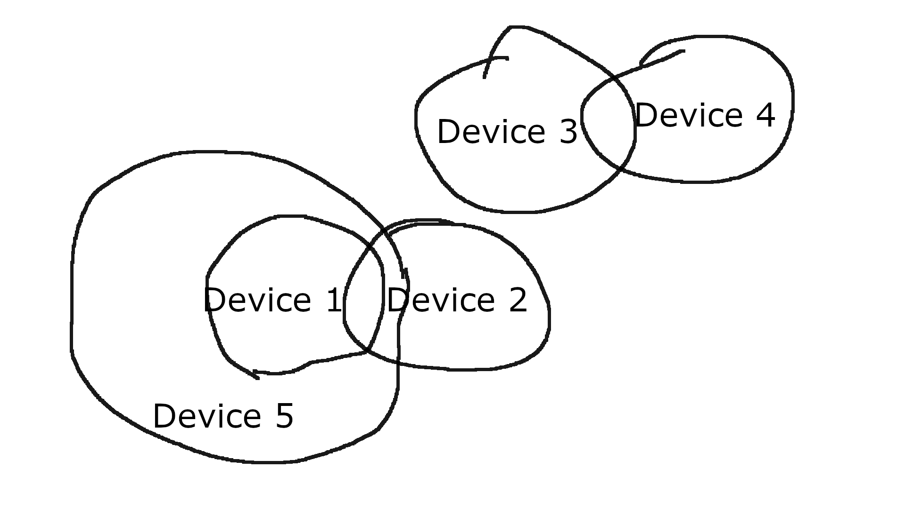

{ v e l o c i t y } is a fast-paced first-person puzzle game abount movement, and, you guessed it, velocity.
i was the sole developer of this game except for a small few contribuitions from xeight, who you can find on https://xeight.straw.page/. i did all the programming, level design, music, and graphic design myself. i think this shows in some unfortunate ways, such as the pacing, and unintuitiveness of the game at some points, but there were also quite a few interesting obstacles to overcome.
the game revolves around movement, and devices you get along the game. first, let's go over the movement.
moving midair makes you move absurdly fast. there's absolutely no movement, no air resistance, and rather than your base movement force being slowed down midair, its actually multiplied by 1.2. this sounds really unbalanced, which it is, but it's also really fun.
by pressing shift on the ground, you can dash in the direction you're moving, which will expend a decent chunk of your stamina. your dash velocity clears very quickly on ground, but if you jump while you still have dash velocity, you will retain that velocity midair, allowing for some really fun and fast movement. rather than jumping, you can also
choose to slide, which will conserve your horizontal velocity NO MATTER WHAT, allowing for some really crazy speed builds.
the real meat of the game, however, is the devices you get along the way. there are five devices in total, each with their own unique function.
the first device allows you to save and load velocity. by pressing right click, you save your current velocity, and by pressing left click, you load that velocity back onto yourself. you can also press left alt to add your current velocity to your saved velocity, letting you build up more and more speed.
this can be comboed with sliding, letting you add your current speed to your saved speed without losing any of it, allowing you to build up speed only limited by your own click speed.
the second device lets you push and pull objects. pretty straightforward, you can use this to move boxes onto buttons, or fling objects at high speeds to aim them at pressure plates.
the third device lets you swap velocities with objects. by aiming at an object and left clicking, you swap your velocity with that object's velocity. you can combo this with the second device to fling objects at high speeds, then swap velocities with them to launch yourself at high speeds.
the fourth device lets you teleport. by right clicking, you place a teleportation marker at your current location, and by left clicking, you teleport to that marker. not too much to say about this one, its pretty straightforward.
the fifth and final device lets you redirect your velocity. by aiming in a direction and left clicking, your current velocity is redirected to that direction, while maintaining its magnitude. this lets you do some really cool maneuvers, like launching yourself upwards after building up speed. while flying, you can also right click to pulse your velocity in the direction you're looking.
a consequence of the main mechanic of the game being saving and loading velocity is that you can gather a theoretically infinite amount of velocity in any given direction, meaning the player has full control over their position in space at any time. this makes the introduction of any mechanic whatsoever so hard to matter whatsoever. its so easy to have a mechanic bring up a question like "why is there a launchpad here? i can just dash and go beyond that speed myself." or "why would i do some intricate cool feeling move when i could just get that speed myself way easier?"
most of the time i cant answer that, so the cool mechanic ends up scrapped or completely remade. my biggest regret in the latest iteration of the game is the fifth device, which is redirecting velocity to the direction that you look in. i feel like it completely destroys any possible use for saving velocity in the lategame, because it does everything the first device does and more.
i think the best way to represent this is through these two diagrams.
in this diagram, you can see all devices doing their own thing. awesome! saving and loading velocity (device 1) has some overlap with teleporting (device 4), that overlap being the way they modify the players position, and device 2 and 3 overlapping by modifying other objects' positions.
and then device 5 comes around and fffffffffucks device 1 over and completely replaces it. there isnt a single thing device 1 can do better than 5.
i think there is still a lot of good in { v e l o c i t y }, but the ending is fundamentally flawed in a way i honestly dont know how to fix.
the music is a decently solid axis of the game, in my belief.
song name: WHAT
im sorry i like fast paced dnb okay its FUN and i needed something intense for the final level
song name: what?
yeah this is just a chiller version of what so what huh what are you gonna do about it
song name: HIVEMIND INC. PRESENTS...
this was the original final song, but i liked it better as the boss before the end. didnt feel fast enough to be the end, but its also just fun
this song is untitled. in the game its just called "tense.mp3" and i couldnt be bothered to name it
this was actually made for SUBURBIA INFINITUM, (and it still is) but i felt like it fit chamber 7 pretty well so i lightly modified it and now its this.
theres some stolen toby fox motifs in there. i also (tried) to use the neverending night motif in SUBURBIA INFINITUM and it sounds nothing like it but its fine